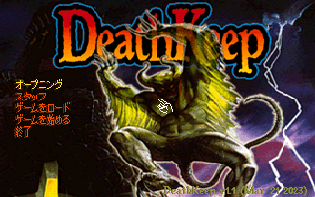
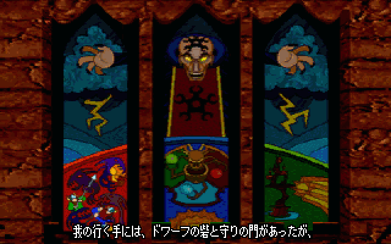
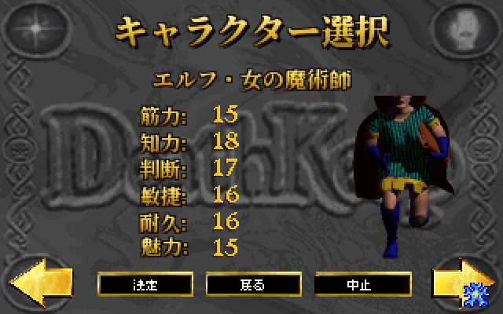
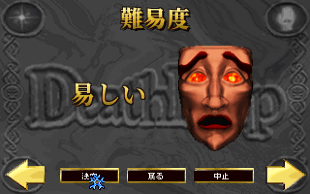
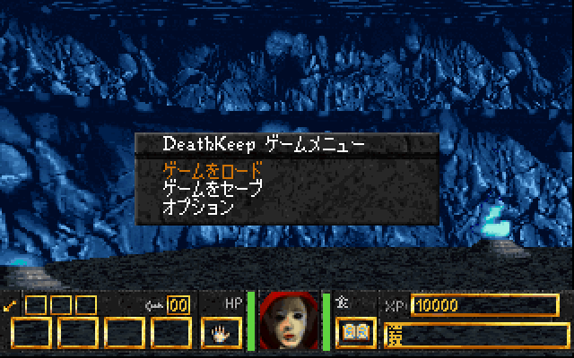
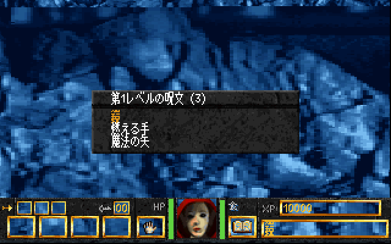
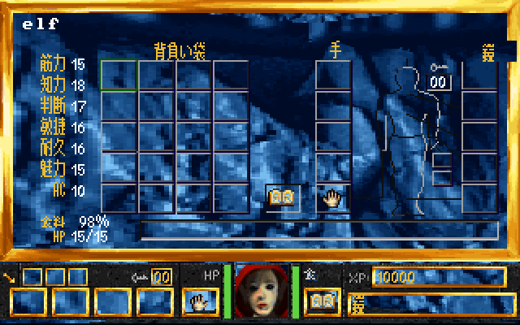
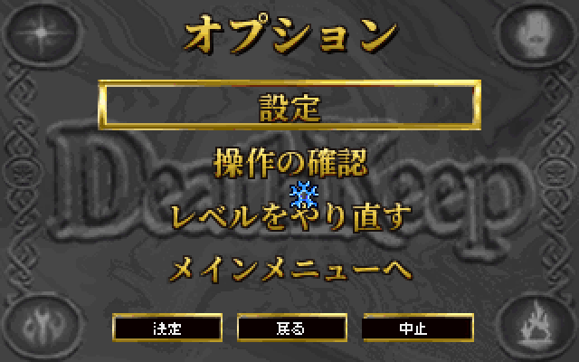
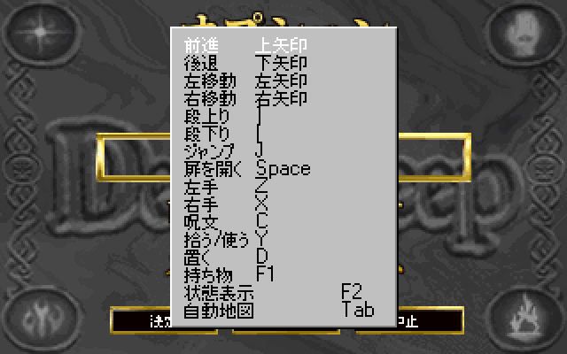

どんなゲーム？
デスキープは、1995年に SSI から発売された AD&D 公式ライセンスの 3D アクション RPG です（もとは 3DO 向けに作られ、のちに Windows 95 に移植されました）。
プレイヤーはドワーフの戦士、エルフの魔術師、ハーフエルフの戦士/魔術師から 1 人を選び、祖先から伝わる護符に導かれて、氷の湖からよみがえったネクロマンサーを倒す旅に出ます。凍てついた洞窟から錬金・物質・星幽の塔、そして怪物の体内のような迷宮まで、23 のレベルを一人称視点で進みます。
DeathKeep
Steam 版「DeathKeep」を日本語で遊べるようにする、非公式のファンメイドパッチです。 メニューとメッセージ、アイテム・呪文・怪物の名前、インベントリや呪文の選択に加えて、 キャラクター選択やレベルクリアの画面など絵として描かれた見出し・ボタンも日本語の絵に差し替えました。 語りのあるムービーには日本語の字幕が付きます。 ゲームのフォルダにファイルを 1 つ置くだけで日本語になり、消せば英語に戻ります。
デスキープは、1995年に SSI から発売された AD&D 公式ライセンスの 3D アクション RPG です（もとは 3DO 向けに作られ、のちに Windows 95 に移植されました）。
プレイヤーはドワーフの戦士、エルフの魔術師、ハーフエルフの戦士/魔術師から 1 人を選び、祖先から伝わる護符に導かれて、氷の湖からよみがえったネクロマンサーを倒す旅に出ます。凍てついた洞窟から錬金・物質・星幽の塔、そして怪物の体内のような迷宮まで、23 のレベルを一人称視点で進みます。









DeathKeep_JP.zip を展開します。winmm.dll を、ゲームのフォルダ（DK.EXE があるフォルダ）にコピーします。games\DeathKeep に進みます。GOG 版でも、DK.EXE があるフォルダに winmm.dll を置けば動くように作ってあります（文字を描く処理などはファイルの中身から探して差し替えます）。GOG 版での動作はまだ確かめていません。
ゲームのファイルは書き換えません。日本語にした画像は、起動時に %LOCALAPPDATA%\DK_JP\img フォルダに書き出して読ませています。
winmm.dll を消すと英語に戻ります。%LOCALAPPDATA%\DK_JP フォルダも消してかまいません。セーブデータはそのまま使えます。winmm.dll を置くものとは同時に使えません。誤訳や不自然な訳に気づいたら、GitHub の Issues で教えてください。